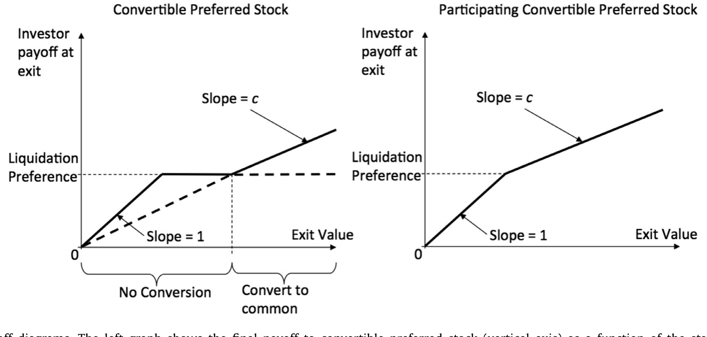
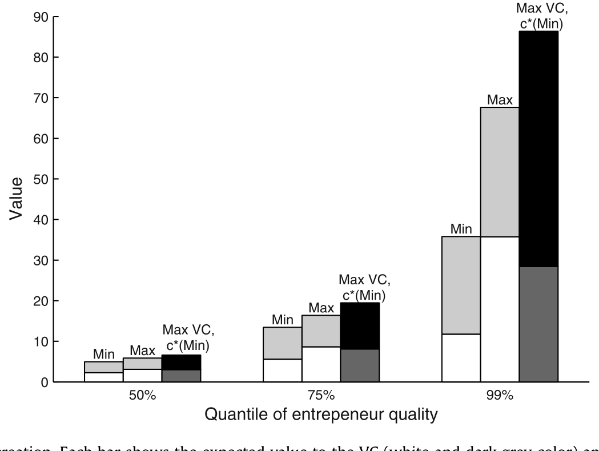
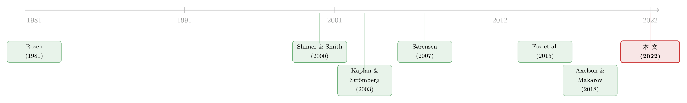

VC 拿走的，从来不止「一半的饼」
本文读的是 Ewens, Gorbenko & Korteweg (2022, Journal of Financial Economics)：他们用一个动态搜寻—匹配模型，从 8100 多份首轮风投合约里估出了「合约条款到底如何改变创业公司的价值、又如何在创业者和投资人之间分饼」。核心发现是——存在一个能最大化成功概率的「最优股权分割」（VC 转股后约占 15% 股权），但现实里 VC 凭借议价权拿到的远不止于此（平均股权份额 40%，折成价值接近公司的一半），代价是把饼做小了。
1 一个老问题，和一道绕不过去的坎
创业者和投资人坐到谈判桌前，到底在谈什么？
表面上谈的是钱：投多少、占多少股。但任何读过一份真实风投协议的人都知道，事情远没这么简单。可转换优先股 (convertible preferred stock)、参与分配权 (participation rights)、回购/反稀释的 pay-to-play、董事会席位 (board seats)……这些条款密密麻麻，像是一套精心设计的机关。
理论界对此有两种针锋相对的解释。一种是「效率派」：复杂条款的存在，是为了改善激励、缓解信息不对称，把公司这块饼做得更大（Cornelli and Yosha, 2003; Kaplan and Strömberg, 2003; Schmidt, 2003）。在这一派的标准设定里，投资人是同质的、竞争性的，不主动影响公司价值，因此赚不到租金。另一种是「分配派」：在有限责任和种种市场摩擦之下，投资人谈某些条款不是为了把饼做大，而是为了把饼多切给自己一点。
哪一派对？这本来该是个实证问题。可真正动手就会撞上一道坎——合约是内生的。
你观察到一份「VC 占 40% 股权、带参与分配权」的合约，同时观察到这家公司后来上市了。你能说「这些条款导致了成功」吗？不能。因为能签下这种合约的，往往本就是更强的投资人配上更强的创业者。条款、质量、结果，三者纠缠在一起。
用计量的语言说：合约 c 与投资人质量 i、创业者质量 e 高度相关，而 i、e 又恰恰是研究者观察不到的。这是一个典型的遗漏变量问题。理想情况下你想要一个工具变量，能制造出与 i、e 无关的 c 的变动——但这样的自然实验几乎找不到。
这篇论文的巧妙之处，正是把这道「坎」本身，变成了识别的「桥」。
2 识别：让「搜寻摩擦」充当工具变量
先把作者在第 2 节里给的那个最小例子讲清楚，因为它一句话点破了全文的识别逻辑。
假设创业公司若成功，其价值为
$$\pi = i \cdot e \cdot \exp\{-2.5 \cdot c\}$$
这里 i、e 分别是投资人和创业者的质量，c 是投资人拿到的普通股份额。指数项里的负号说明：投资人占得越多，创业者留下的越少、干劲越小，公司价值越低（注意，在真正的估计里作者并不强行规定这个效应必须为负）。
对最核心的这个价值函数，把它拆开来看：
如果我们真能采集到一批匹配的 (i, e, c^*, \pi)，那么下面这个回归就能识别出真实系数，哪怕匹配与合约都是内生形成的：
$$\log \pi = \beta_1 c^* + \beta_2 i + \beta_3 e + \varepsilon$$
在例子的参数下，它会精确地还原出 β₁ = −2.5、β₂ = 1、β₃ = 1。
问题来了：i、e 观察不到，怎么办？
这正是搜寻摩擦发挥作用的地方。 设想投资人有三种类型 i = 1, 2, 3，创业者也有三种 e = 1, 2, 3，双方随机相遇。相遇后投资人可以选择「出价签约」或「继续搜寻、赌下一个更好的对手」；创业者也有拒绝并继续等的权利。于是哪些匹配会成交、成交时签什么合约 c^*，都是均衡内生决定的。论文给的那张 3×3 表里，i = 3 的投资人会和先遇到的 e = 2 或 e = 3 成交，但绝不会接受 e = 1——因为「再等一个好创业者」的价值，高于「现在就和差创业者成交」。
关键的洞见是：观察到 c^*，本身就泄露了双方的类型。 在例子里 c^* = 0.19 只可能由 i = 2、e = 2 签出。这种「相遇的随机性带来选择上的外生变动」，在功能上就等价于标准 Heckman 选择模型里的那个工具变量。换句话说，作者没有去外面找工具变量，而是把搜寻摩擦造出的随机相遇当成了内生的工具。
当然，现实里类型数目很多、不同组合可能签出相同合约，而且研究者通常连 \pi 都看不准（只能看到「是否 IPO」这类粗糙的成功度量）。所以作者并不去逆向求解每一笔交易的 i, e, \pi，而是退一步，用矩估计（method of moments）去拟合「匹配频率、合约、结果」三者的聚合联合分布——求出市场上 i、e、\pi 的整体分布，而非逐笔身份。这让模型既能容纳众多条款，又能容纳内生匹配与议价，并且在大样本下是渐近无偏的。代价是：它说不清驱动结果的具体机制（是双重道德风险？是资产替代？模型不区分），只给出条款 → 价值与分配的简约形式。
这套做法的精神，和私募市场里「靠谁愿意把钱交给谁」来反推质量的研究是相通的（关于私募市场里 LP 如何在没有战绩时挑选管理人，可参见《没有战绩，照样拿到钱》）。
3 模型骨架：一个连续时间的双边搜寻市场
把识别例子升级成可估计的结构模型，作者搭的是一个连续时间、Poisson 相遇的双边搜寻—匹配框架。直观地讲：
- 谁在搜寻：身无分文（penniless）的创业者在找 lead VC，VC 也在找创业者，双方按 Poisson 流随机相遇（基准设定里相遇是随机的，扩展里允许定向搜寻）。
- 相遇之后：投资人要么提出一份合约，要么放弃这次、继续搜寻以期遇到更好的创业者；创业者的议价权，来自「我可以拒绝、继续等一个更高质量的 VC」这一外部选项。
- 合约能做两件事：既影响饼的大小（公司价值
\pi），又影响饼怎么分（创业者与投资人各得多少）。作者用灵活的简约形式同时刻画这两者。 - 特例：当投资人完全竞争、同质、且毫无议价权时，模型退化为「VC 赚零租金」的经典世界——也就是效率派的标准设定。
这个连续时间设定里，Poisson 相遇过程让它在数学上很接近 Adachi (2007) 的离散时间双类型匹配，又承袭了 Shimer and Smith (2000) 刻画的内生匹配均衡。比起静态匹配模型，它多了「动态」和「合约」两层，却依然 tractable。
合约的具体形态，论文聚焦在转股后投资人的股权份额、参与分配权、pay-to-play、以及董事会席位。这里值得专门看一眼可转换优先股的退出收益结构——它正是所有分配条款的几何起点：在「带参与」下，投资人先拿优先清偿、再按普通股比例分剩余；在「不带参与」下，投资人必须二选一，要么拿优先清偿、要么转成普通股。

Figure 1: Exit payoffdiagrams. The left graph shows the final payoffto convertible preferred stock (vertical axis) as a function of the startup’s exit
正是这条折线的形状，决定了同样一个「股权份额」数字，落到价值上会被优先条款放大多少。
4 主要结果：最优分割存在，但 VC 不会停在那里
把模型带到数据上，几个量级非常清晰，也非常有冲击力。
第一，确实存在一个内生的「最优股权分割」。 固定投资人和创业者的质量，平均而言，公司价值随 VC 转股后股权份额上升而上升，直到 15% 这个临界点；再往上，价值开始下降。一个内部最优的存在，恰恰和「双边道德风险」（投资人和创业者都要出力公司才能成）这类理论吻合——效率派说对了一半。
第二，15% 这个看似不高的股权，对应的其实是公司价值的 28%。 因为优先清偿等条款会把更多价值往 VC 这边搬。换句话说，「股权份额」和「价值份额」是两码事，优先条款撑大了后者。
第三，也是反转所在——现实里 VC 平均拿到 40% 的股权份额，折成价值接近公司的一半。 这远远超过了那个能最大化成功概率的 15%。代价是什么？平均成交合约下的公司价值，只有「价值最大化合约」下价值的 83%。但对 VC 来说，拿走一块被压小了的饼的近一半，仍然好过拿走那块最大饼的 28%。于是分配派也说对了一半：VC 用议价权把饼切给了自己，哪怕这让饼变小了。
下面这张图把「价值创造」在 VC 与创业者之间的劈分讲得最直白：

Figure 4: VC and entrepreneur value creation. Each bar shows the expected value to the VC (white and dark grey color) and entrepreneur (light grey and
第四，其它条款各司其职。 参与分配权显著降低成功概率，同时把更大一块价值转给 VC；董事会席位方向相同，但强度只有参与权的约三分之一，且对某些高质量 VC 的交易反而能提高成功率（监督、换 CEO、专业化等增值效应在这里占了上风）；pay-to-play 则方向相反，它提高价值并把分配往创业者一侧挪，强度略弱于董事席位。
第五，VC 投资并不在均衡里「毁灭价值」。 对一个处于 99% 质量分位的创业者，从最差的 VC 换到最好的 VC，公司价值上升 89%、创业者自己的价值上升 33%——即便此时公司价值并未被最大化、且更大一块归了高质量 VC。更耐人寻味的是，即便议价权最强的顶级 VC，也仍会把接近一半的公司价值留给创业者，否则就破坏了激励、也在市场上失去了竞争力。
第六，反事实里的「搜寻摩擦」是把双刃剑。 如果把相遇的平均间隔时间减半，全市场所有交易的价值上升 1.2%；但若把它降低一个数量级，价值反而下降 5.1%。原因是：摩擦一旦减小，VC 能更频繁地遇到新创业者，议价权进一步向 VC 倾斜，它会索取更高的占股，反过来压低公司价值。「更高的匹配率」和「更低的平均公司价值」之间存在张力，只有在摩擦小幅下降时市场才整体获益。Glode and Opp (2020) 在 OTC 市场里推出过类似的理论结论。
5 文献脉络
这条研究线，可以从两股源头讲起。
一股来自经济学超级明星理论：Rosen (1981) 指出，当个体能力会主动放大产出时，次一等的人无法成为顶尖者的替代品——这正是「VC 不是同质的、好 VC 赚租金」这一观点的理论根。后来 VC 回报的持续性证据（Kaplan and Schoar, 2005; Hochberg et al., 2014; Korteweg and Sorensen, 2017）为它提供了实证支撑。
另一股来自搜寻—匹配理论：Shimer and Smith (2000) 在连续时间里刻画了带摩擦的内生匹配均衡，Smith (2011) 做了系统综述，Hatfield and Milgrom (2005) 把「合约」引入匹配，Adachi (2007) 给出了带内生交易条款的双类型离散时间版本。

而在风投实证这一侧，Kaplan and Strömberg (2003) 第一次把真实 VC 合约条款系统地摆上台面，做了开创性的描述性分析。真正最接近本文的是 Sørensen (2007)——他用一个静态双边匹配模型估计了「匹配」相对于「可观察特征」对 IPO 概率的贡献，但他把创业者与 VC 之间的价值分割设为外生固定的。本文在两点上推进了 Sørensen：一是把市场建成动态的（更现实、也更 tractable），二是让总价值的分割通过内生谈判的合约来决定。Fox et al. (2015) 研究了一次性匹配中带内生条款的识别，但偏理论、且应用到 VC 时不含合约；Axelson and Makarov (2018) 则发展了一个单边序贯搜寻模型，与本文不同的是其中双方互不知道对方类型。本文正坐落在「动态搜寻 + 内生合约 + 双边匹配」三者的交汇点上。
6 评论与延伸（Q&A + 研究方向）
(a) 几个可能的疑问
Q：搜寻摩擦凭什么能当工具变量？它真的「外生」吗？
严格说，它不是天上掉下来的外生冲击，而是模型内生的随机相遇。其合法性建立在「相遇时点的随机性与双方质量无关」这一结构假设上——功能上类似 Heckman 选择里的排他性变量。这意味着识别是模型依赖（model-dependent）的：换一套相遇过程的假设，估计就可能变。它的可信度不来自自然实验，而来自结构设定的合理性与稳健性检验。
Q：15% 的最优股权和 40% 的现实股权，差距这么大，是不是模型设定撑出来的？
这正是该追问的地方。作者用一系列稳健性检验回应：替换成功的度量（后续融资、IPO）、不同贴现率、按行业/地区/时间/辛迪加特征/资本密集度分样本，结论定性不变；引入定向搜寻、给创业者额外议价权、加入创业者过度自信、单维不对称信息等扩展后，结论也大体不动。但「机制不可识别」是硬伤——它能告诉你「VC 多拿了」，却说不清是通过道德风险、资产替代还是别的渠道。
Q：这和「正向选择性匹配」（positive assortative matching, PAM）的直觉冲突吗？
是的，而且这是个有意思的发现。一旦合约内生，PAM 不一定成立。同一个创业者匹配到质量递增的 VC 时，VC 会先把 pay-to-play 拿掉、再争董事席位、最后才争参与权，占股一路上升——内生合约给「越好配越好」这条规律引入了例外。
Q：那 VC 的「风格」（style）persistence 是不是就被解释掉了？
部分被解释。文献里 VC 合约的持续性常被归为「VC 固定效应/风格」（Bengtsson and Sensoy, 2015）。但本文指出，当一个 VC 面对的是一段质量分布的创业者、且其中至少一些有足够议价权时，风格无法完全解释观察到的合约模式——持续性至少有一部分来自「VC 握有大部分议价权」的市场均衡本身。
Q：现金流权和控制权该「捆在一起」还是「分开」？本文站哪边？
文献里有两类模型：一类预测现金流权与控制权应当一起交给「股权类」投资人（Kalay and Zender, 1997; Biais and Casamatta, 1999），另一类在有监督成本时把相机控制权交给「债权类」投资人（Townsend, 1979; Diamond, 1984; Gale and Hellwig, 1985）。本文条款交互的证据，在创业融资这个场景下偏向后者。
Q：「公司价值降了 17%」是不是意味着 VC 投资在毁灭价值？
不是。这些都是集约边际（intensive margin）上的比较——固定双方质量、比较不同合约。在扩展边际上（有多少创业者和投资人进出市场）模型说不了话。而且换更好的 VC 仍让创业者更富（+33%）。所谓「降低」是相对「假想中那份价值最大化合约」而言，不是相对「不拿 VC 的钱」。
(b) 几个可能的研究问题与提案
1. 把这套框架搬到公司债的私募发行/直接借贷市场
【经济故事】中端市场的直接借贷（direct lending）同样是「投资人与借款人随机相遇、内生谈判契约（利率、契约条款 covenants、抵押）」的双边市场，且贷款人异质、议价权差异巨大。能否估出一个「最大化项目价值的最优 covenant 强度」，再看私募信贷基金凭议价权偏离了多少？（关于谁悄悄接住了银行不愿借的公司，可参见《银行撤退之后》） 【可行性】中。需要贷款层面的条款数据（如 DealScan/Pitchbook 私募信贷）和违约/退出结果；识别上可复用「相遇随机性」假设，但借款人往往重复融资，反而比 VC 更利于用固定效应交叉验证。
2. 外资 VC vs. 本土 VC：议价权是否随「外部选项」系统性不同
【经济故事】本文的议价权核心是「外部选项的价值」。外资 VC 通常面对更宽的创业者流、也更可能撤离，按模型其议价权应更强、索取的占股更高。这能为「外资持有人是否更 extractive」提供一个结构化的度量。 【可行性】中。需要跨境首轮融资合约（部分可由 VC 数据库拼出投资人国别），样本会变薄；识别依赖能否分国别估出不同的相遇率。
3. 流动性/二级市场的兴起如何改变「搜寻摩擦」
【经济故事】近年 VC 二级份额市场和持续基金（continuation funds）实质上降低了搜寻摩擦。按本文反事实，摩擦下降会把议价权进一步推给 VC、压低公司价值——这是一个可被直接检验的、带方向性的预测。 【可行性】中偏低。难点在于度量「相遇间隔」的时变；可用二级市场成交活跃度作为摩擦的代理，做跨期比较（本文本身就用跨期差异做稳健性）。
4. 把「机制」从简约形式里拆出来
【经济故事】本文最诚实的短板是「不识别机制」。能否在其框架上加一层结构（例如显式的双边道德风险努力选择），让「参与权为何降低成功概率」这类问题有答案？ 【可行性】低。这等于要把简约形式换成结构化的激励模型，估计负担陡增，且可能牺牲掉「能容纳众多条款」的优点——是典型的 tractability 与 interpretability 的取舍。
7 我的判断
这篇论文最漂亮的地方，是把「内生合约」这个让无数实证研究头疼的麻烦，转化成了识别的资源——搜寻摩擦造出的随机相遇，既是经济机制，也是工具变量。它给出的那对数字——最优分割 15% 股权（对应 28% 价值）对现实 40% 股权（对应近半价值）——干净利落地把「效率派」和「分配派」的争论一锤定音为「两者都对一半」：饼有一个最优切法，但 VC 不会停在那里。
担忧也集中在一处：结果是模型依赖的。识别不靠自然实验，而靠「相遇随机、且其随机性与质量无关」这一结构假设；一旦相遇本身带选择性（好 VC 系统性地更早遇到好项目），那条「工具」就被污染了。作者用定向搜寻等扩展做了缓冲，但这终究是在「同一套结构假设的不同版本」内部检验稳健性，而非用模型外的外生变动来证伪。再加上机制不可识别、以及所有结论都停在集约边际上（说不了「市场上会多出还是少掉多少创业者」），它能回答「分多少」，却回答不了「机制是什么」和「总量会怎样」。
我接下来最想看到的，是有人拿一个真正外生的摩擦冲击（比如某项让 VC 与创业者相遇成本骤降的政策或平台）去检验那个反事实预测：摩擦下降，议价权是否真的向 VC 倾斜、公司价值是否真的被压低。如果能在模型之外把这条因果链验出来，这篇论文的分量还会再上一个台阶。
参考文献
- Adachi, H. (2007). A search model of two-sided matching under nontransferable utility. Journal of Economic Theory.
- Axelson, U., Makarov, I. (2018). Sequential Credit Markets. Working paper.
- Cornelli, F., Yosha, O. (2003). Stage financing and the role of convertible securities. Review of Economic Studies 70, 1–32.
- Fox, J.T., et al. (2015). Identification in matching games. Quantitative Economics.
- Hagedorn, M., Law, T.H., Manovskii, I. (2017). Identifying equilibrium models of labor market sorting. Econometrica 85, 29–65.
- Hatfield, J.W., Milgrom, P.R. (2005). Matching with contracts. American Economic Review 95, 913–935.
- Hochberg, Y.V., Ljungqvist, A., Vissing-Jorgensen, A. (2014). Informational hold-up and performance persistence in venture capital. Review of Financial Studies 27, 102–152.
- Kaplan, S.N., Schoar, A. (2005). Private equity performance: returns, persistence, and capital flows. Journal of Finance 60, 1791–1823.
- Kaplan, S.N., Strömberg, P. (2003). Financial contracting theory meets the real world: an empirical analysis of venture capital contracts. Review of Economic Studies 70, 281–315.
- Korteweg, A., Sorensen, M. (2017). Skill and luck in private equity performance. Journal of Financial Economics 124, 535–562.
- Rosen, S. (1981). The economics of superstars. American Economic Review 71, 845–858.
- Schmidt, K.M. (2003). Convertible securities and venture capital finance. Journal of Finance 58, 1139–1166.
- Shimer, R., Smith, L. (2000). Assortative matching and search. Econometrica 68, 343–369.
- Smith, L. (2011). Frictional matching models. Annual Review of Economics 3, 319–338.
- Sørensen, M. (2007). How smart is smart money? A two-sided matching model of venture capital. Journal of Finance 62, 2725–2762.
- Townsend, R.M. (1979). Optimal contracts and competitive markets with costly state verification. Journal of Economic Theory 21, 265–293.